10. 并发控制：同步 (2)
什么是信号量¶
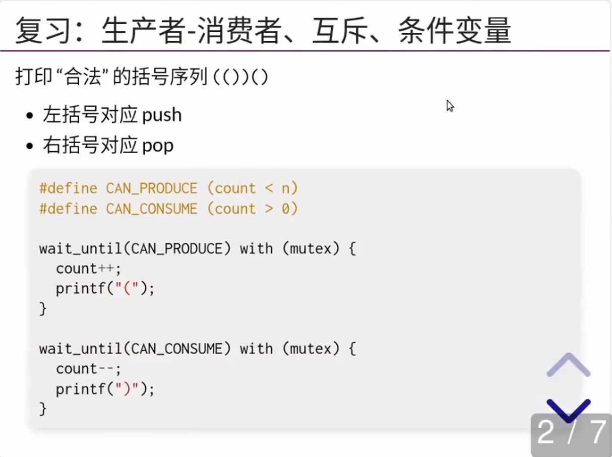 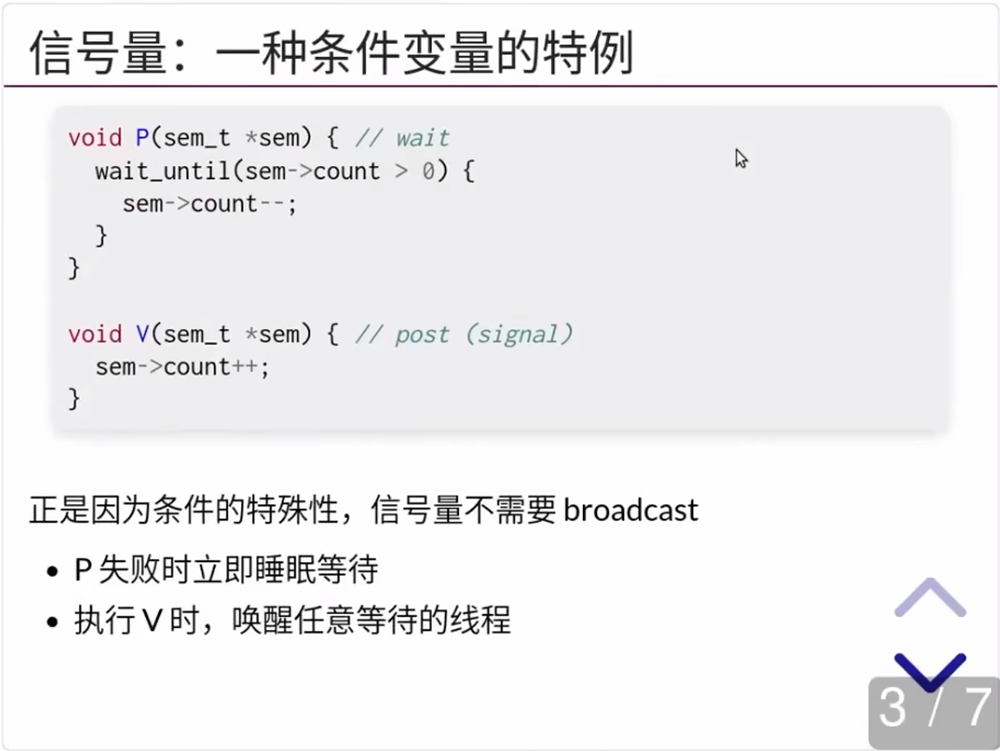 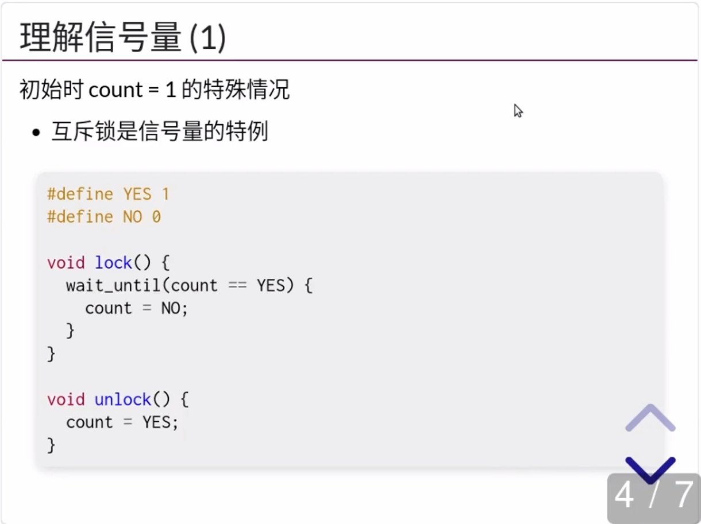 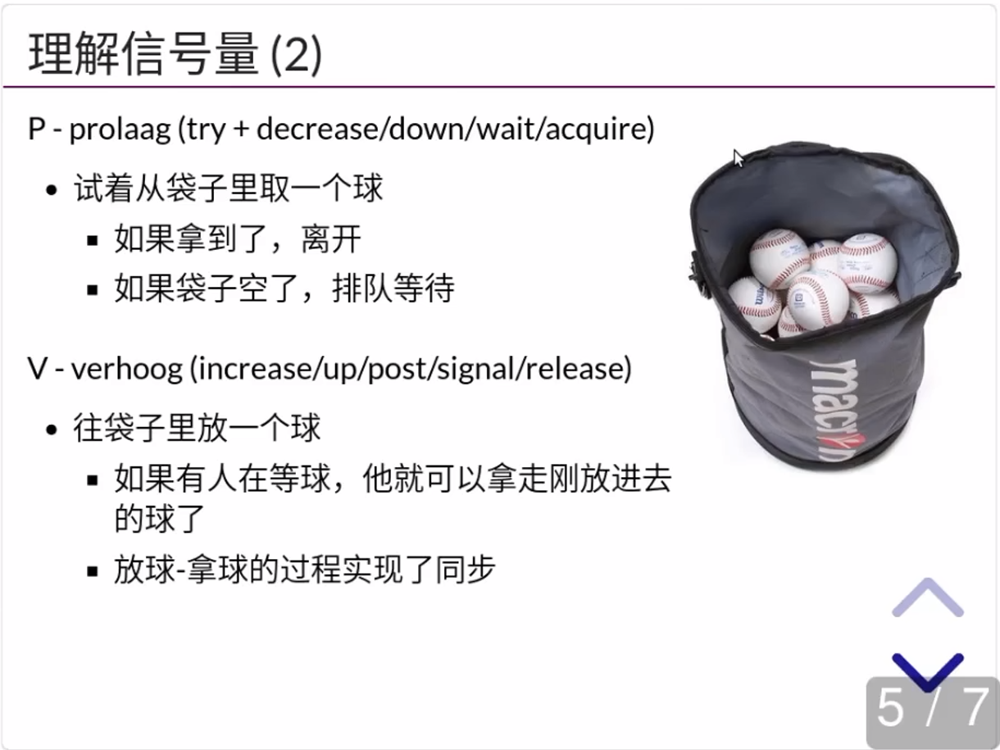 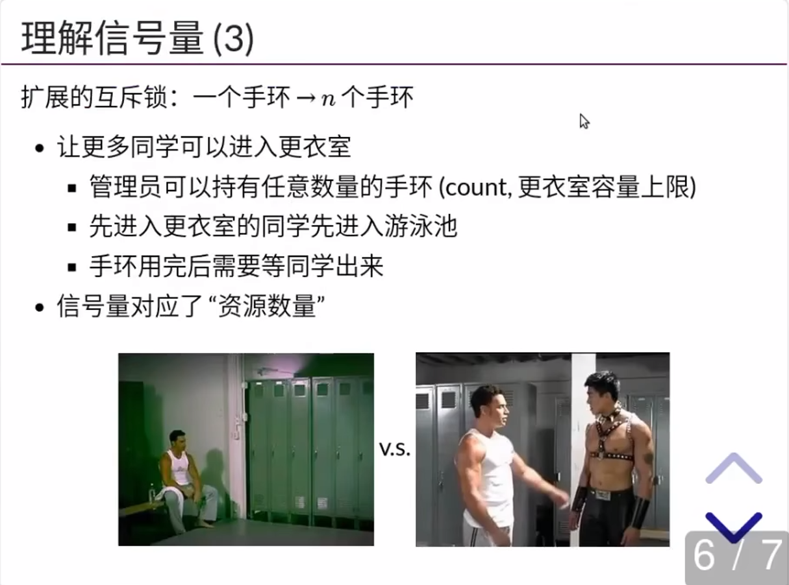 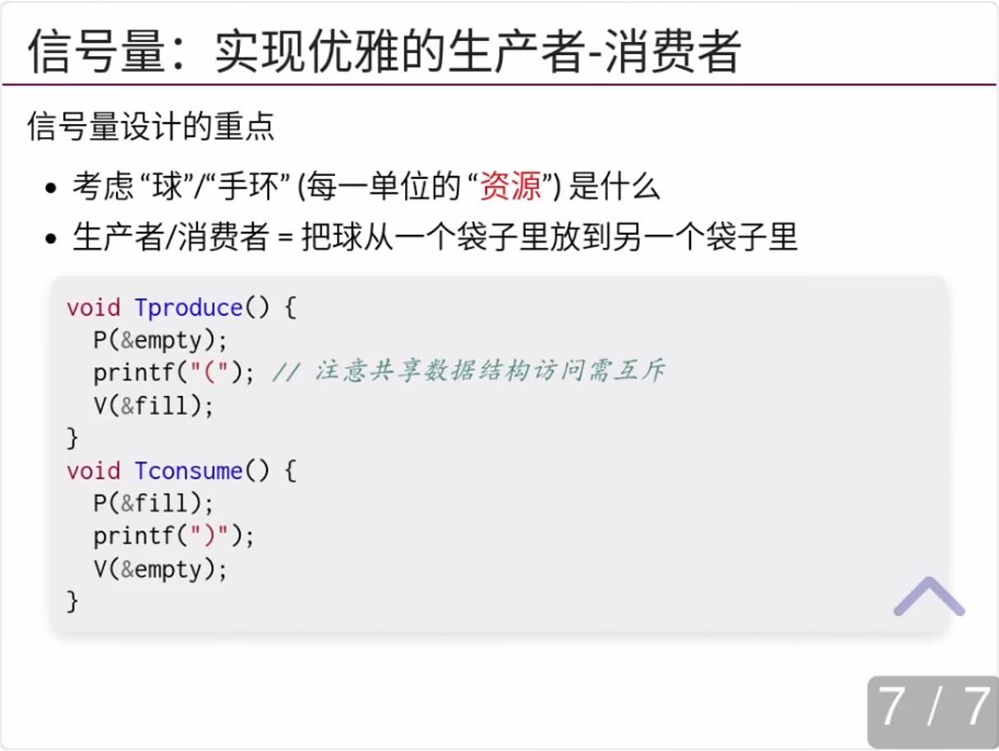
代码示例：信号量解决生产者-消费者问题
在任意时刻，empty/fill 的数值就代表了当前还可以打印左括号/右括号的数量。而希望打印的线程，必须从相应的袋子里取走一个球。特别值得注意的是，我们总是把先把括号打印出来，再对相应的信号量执行 V 操作，这实现了生产者-消费者之间的同步。
#include "thread.h"
#include "thread-sync.h"
sem_t fill, empty;
void Tproduce() {
while (1) {
P(&empty);
printf("(");
V(&fill);
}
}
void Tconsume() {
while (1) {
P(&fill);
printf(")");
V(&empty);
}
}
int main(int argc, char *argv[]) {
assert(argc == 2);
SEM_INIT(&fill, 0);
SEM_INIT(&empty, atoi(argv[1]));
for (int i = 0; i < 8; i++) {
create(Tproduce);
create(Tconsume);
}
}
信号量适合解决什么问题¶
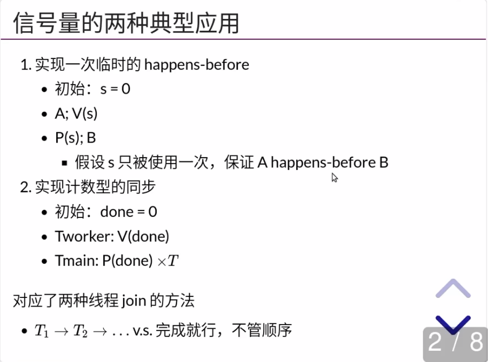
条件变量实现 happens-before
条件变量实现比信号量还是要麻烦一点的：
B 如果还没执行到 P(s)，那么 A 发送 cond_broadcast 或者 cond_signal 就丢失了。
还需要一个额外的变量去标记。
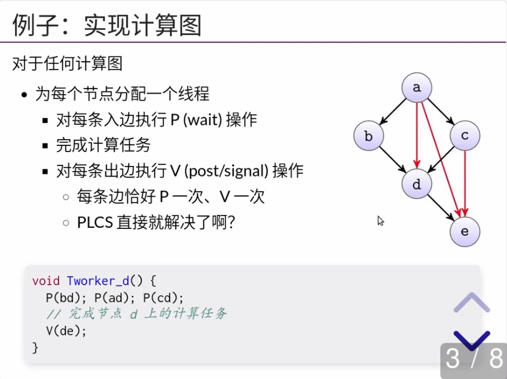 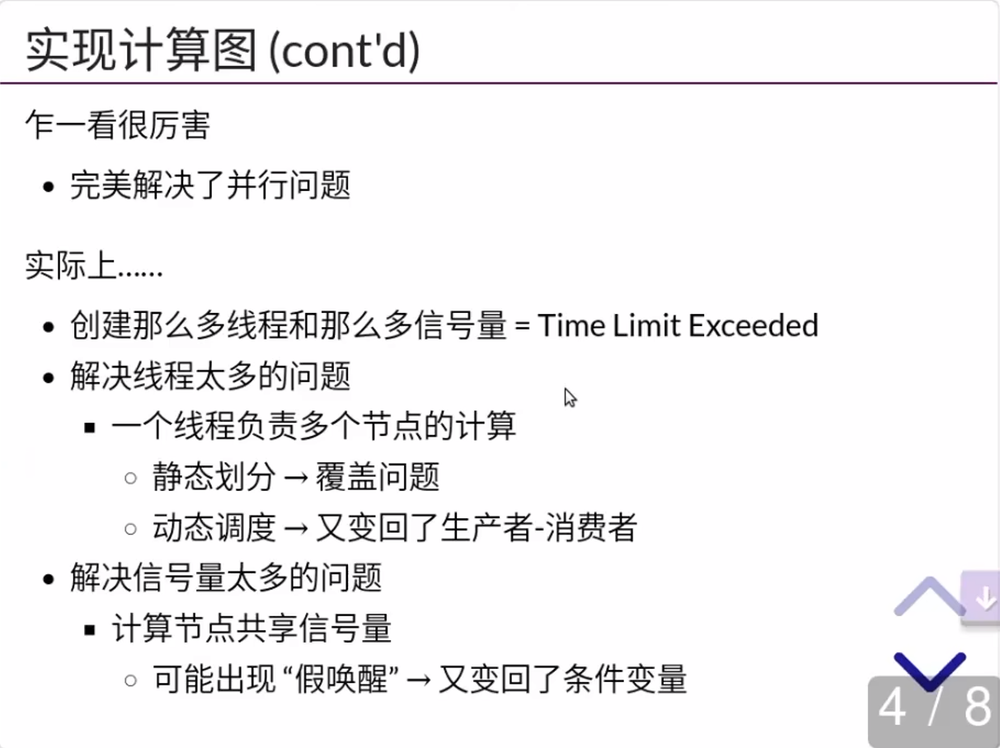
1.信号量实现线程 join¶
代码示例：信号量实现线程 join
一对 V-P 操作形成了 happens-before 关系，从而实现 “一件事等另一件事完成才能开始” 类型的同步。类似地，我们可以用信号量实现任意计算图的同步。相比于条件变量，由于 V 操作自带 count++，因此不用担心条件变量中唤醒丢失的情况。
#include "thread.h"
#include "thread-sync.h"
#define T 4
#define N 10000000
sem_t done;
long sum = 0;
void atomic_inc(long *ptr) {
asm volatile(
"lock incq %0"
: "+m"(*ptr) : : "memory"
);
}
void Tsum() {
for (int i = 0; i < N; i++) {
atomic_inc(&sum);
}
V(&done);
}
void Tprint() {
for (int i = 0; i < T; i++) {
P(&done);
}
printf("sum = %ld\n", sum);
}
int main() {
SEM_INIT(&done, 0);
for (int i = 0; i < T; i++) {
create(Tsum);
}
create(Tprint);
}
2.信号量实现同步习题¶
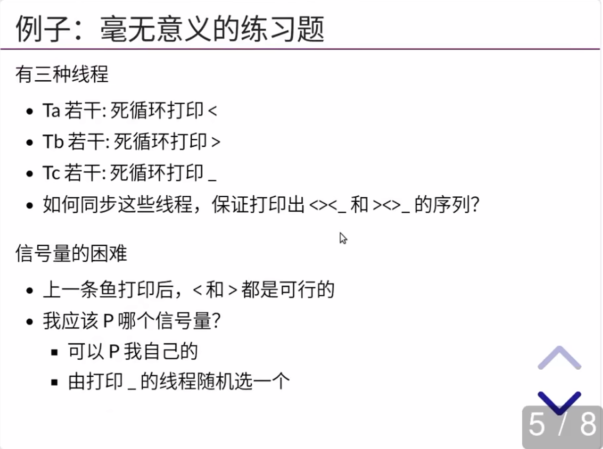
代码示例：信号量实现同步习题
任何并发计算任务都可以看作计算图上的一个拓扑排序 (调度)。因此，我们用信号量实现 happens-before 在原则上能够解决任何 “调度由完成任务的线程控制” 类型的并发同步问题。
#include "thread.h"
#include "thread-sync.h"
#define LENGTH(arr) (sizeof(arr) / sizeof(arr[0]))
enum { A = 1, B, C, D, E, F, };
struct rule {
int from, ch, to;
} rules[] = {
{ A, '<', B },
{ B, '>', C },
{ C, '<', D },
{ A, '>', E },
{ E, '<', F },
{ F, '>', D },
{ D, '_', A },
};
int current = A;
sem_t cont[128];
void fish_before(char ch) {
P(&cont[(int)ch]);
// Update state transition
for (int i = 0; i < LENGTH(rules); i++) {
struct rule *rule = &rules[i];
if (rule->from == current && rule->ch == ch) {
current = rule->to;
}
}
}
void fish_after(char ch) {
int choices[16], n = 0;
// Find enabled transitions
for (int i = 0; i < LENGTH(rules); i++) {
struct rule *rule = &rules[i];
if (rule->from == current) {
choices[n++] = rule->ch;
}
}
// Activate a random one
int c = rand() % n;
V(&cont[choices[c]]);
}
const char roles[] = ".<<<<<>>>>___";
void fish_thread(int id) {
char role = roles[id];
while (1) {
fish_before(role);
putchar(role); // Not lock-protected
fish_after(role);
}
}
int main() {
setbuf(stdout, NULL);
SEM_INIT(&cont['<'], 1);
SEM_INIT(&cont['>'], 0);
SEM_INIT(&cont['_'], 0);
for (int i = 0; i < strlen(roles); i++)
create(fish_thread);
}
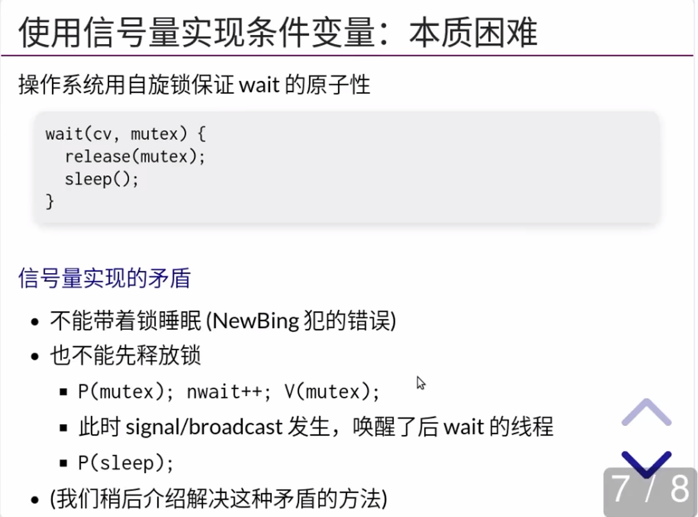 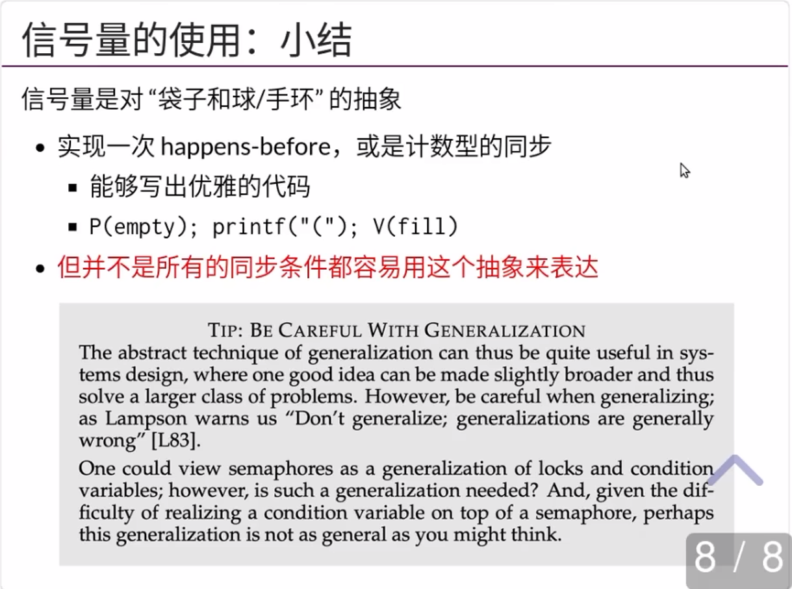
哲 ♂ 学家吃饭问题¶
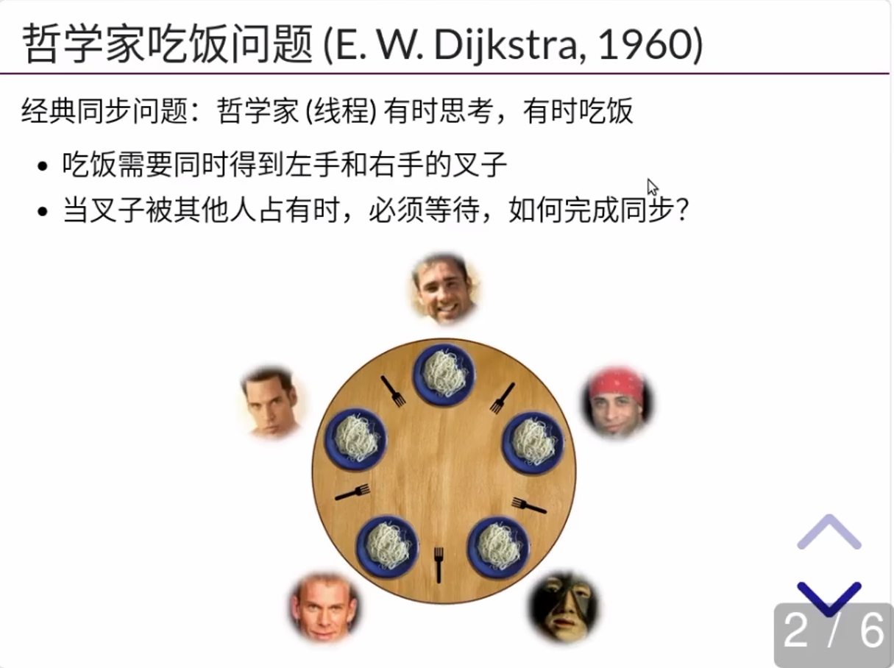
1.失败与成功的尝试¶
失败的尝试 - 把信号量当互斥锁：先拿一把叉子，再拿另一把叉子
成功的尝试 (万能的方法):
#define CAN_EAT (avail[lhs] && avail[rhs])
mutex_lock(&mutex);
while (!CAN_EAT)
cond_wait(&cv, &mutex);
avail[lhs] = avail[rhs] = false;
mutex_unlock(&mutex);
mutex_lock(&mutex);
avail[lhs] = avail[rhs] = true;
cond_broadcast(&cv);
mutex_unlock(&mutex);
2.成功的尝试：信号量¶
Trick: 死锁会在 5 个哲学家 “同时吃饭” 时发生
破坏这个条件即可
- 保证任何时候至多只有 4 个人可以吃饭
- 直观理解：大家先从桌上退出
- 袋子里有 4 张卡
- 拿到卡的可以上桌吃饭 (拿叉子)
- 吃完以后把卡归还到袋子
任意 4 个人想吃饭，总有一个可以拿起左右手的叉子
- 教科书上有另一种解决方法 (lock ordering；之后会讲)
代码示例：信号量解决生产者-消费者问题
在任意时刻，empty/fill 的数值就代表了当前还可以打印左括号/右括号的数量。而希望打印的线程，必须从相应的袋子里取走一个球。特别值得注意的是，我们总是把先把括号打印出来，再对相应的信号量执行 V 操作，这实现了生产者-消费者之间的同步。
#include "thread.h"
#include "thread-sync.h"
#define N 5
sem_t table, avail[N];
void Tphilosopher(int id) {
int lhs = (id + N - 1) % N;
int rhs = id % N;
while (1) {
// Come to table
P(&table);
P(&avail[lhs]);
printf("+ %d by T%d\n", lhs, id);
P(&avail[rhs]);
printf("+ %d by T%d\n", rhs, id);
// Eat
printf("- %d by T%d\n", lhs, id);
printf("- %d by T%d\n", rhs, id);
V(&avail[lhs]);
V(&avail[rhs]);
// Leave table
V(&table);
}
}
int main() {
SEM_INIT(&table, N - 1);
for (int i = 0; i < N; i++) {
SEM_INIT(&avail[i], 1);
}
for (int i = 0; i < N; i++) {
create(Tphilosopher);
}
}
3.分布与集中¶
“Leader/follower” - 有一个集中的 “总控”，而非 “各自协调”
在可靠的消息机制上实现任务分派
- Leader 串行处理所有请求 (例如：条件变量服务)
void Tphilosopher(int id) {
send(Twaiter, id, EAT);
receive(Twatier); // 等待 waiter 把两把叉子递给哲学家
eat();
send(Twaiter, id, DONE); // 归还叉子
}
void Twaiter() {
while (1) {
(id, status) = receive(Any);
switch (status) { ... }
}
}
- 一大桌人吃饭，每个人都叫服务员的感觉
- Premature optimization is the root of all evil (D. E. Knuth)
抛开 workload 谈优化就是耍流氓
- 吃饭的时间通常远远大于请求服务员的时间
- 如果一个 manager 搞不定，可以分多个 (fast/slow path)
- 把系统设计好，集中管理可以不是瓶颈：The Google File System (SOSP'03) 开启大数据时代
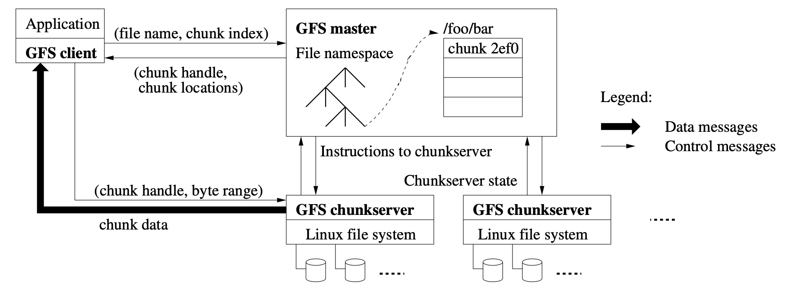
Take-away Messages¶
信号量是一种特殊的条件变量，而且可以在操作系统上被高效地实现，避免 broadcast 唤醒的浪费：
同时，我们也可以把信号量理解成袋子里的球，或是管理游泳池的手环，因此它在符合这个抽象时，能够带来优雅的代码。更重要的是，但凡我们能将任务很好地分解成少量串行的部分和绝大部分 “线程局部” 的计算，那么生产者-消费者和计算图模型就能实现有效的并行。精心设计的分布式同步协议不仅可能存在正确性漏洞，带来的性能收益很可能也是微乎其微的。